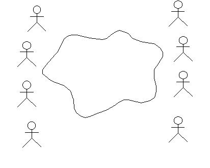

| 指南：用例研讨会 |
 |
|
研讨会的组织用例研讨会是有一种组织的集思广益的会议。需要用到广泛的知识：
这意味着小组将包含具有不同背景、知识和经验的人。尝试使组保持小规模（少于十人）。通常，编组时使组的一半成员来自开发团队，另一半成员来自用户代表。中间则是协调人。 协调人应该充当主持人的角色，即促使大家说出所有想法和期望。 工具需要的工具为：
定义参与者尝试确定系统的使用者。从系统的实际使用人员入手；由于侧重于具体的、而不是抽象的内容，所以大多数人较为轻松。在确定了用户之后，尝试确定用户在与系统进行交互时所扮演的角色，通常，对于参与者而言这是一个好名称。 在确定参与者时，请确保为每个参与者写下一个简短描述；它通常是一些描述参与者在系统中所扮演的角色以及参与者职责的要点，这些要点将在稍后确定参与者在系统中的需求时会有所帮助。 在定义参与者时，请不要忘记与该系统交互的其他系统。 此处的参与者图标会导致误解 － 看起来它暗示参与者是“人”，但参与者的概念还包含系统。 但首先还是要关注作为“人”的参与者；大多数小组在先关注熟悉的事物时会做得更好，其次才会考虑更深奥的事物。 请不要担心用例模型的结构或参与者之间的关系；只需找到系统的使用者。侧重于确定工作，并作好查找大量参与者的准备。不要过多考虑现在就进行列表过滤操作；确定用例（参见下文）将进行此操作。 管理系统提出问题：组织中的哪些角色将使用该系统？为建议的每个角色画一个示意小人，并在该图形下写下一个名称。然后，在白板上列出两列参与者，在示意云朵或已画出图标的两边各列一列。 有时候，使用词语“角色”或“用户”而不是“参与者”会很有用。 要提出的问题：
 实例或类您可以提出诸如：“为什么 Tom 不是参与者？这件事一直是由 Tom 来做的”之类的问题。此时，需要提出更多问题来了解 Tom 的角色是什么。参与者的名称应该反映其角色。
可以通过多个参与者在组织中的常规位置来直接确定他们。组织中的一个位置可以与系统中的多个角色相对应。例如，Tom 可以是一个常规的仓库工作者，同时也是负责重新安排仓库来为新产品腾出空间的人员。 这两种职责对于系统而言可以是两种不同的参与者。 某些人会想要进行极端的泛化。他们可能建议将“用户”作为参与者，然后建议这就是我们需要的唯一参与者。这没错，但没有意义，并且无助于理解系统。 如果有人提出这种建议，尽量避免讨论该提议。将“用户”参与者记录在白板上，然后继续讨论下一个参与者。 沟通技巧
定义参与者通常会花费 1 至 4 个小时。此时白板应该列出了许多参与者，但请确保仍然有添加用例的地方。当确定参与者之后，就可以开始确定用例。
定义用例擦除白板上的云朵或图标，并开始确定用例。将重点放在具体用例上，避免有关包含和扩展关系的讨论。画一个椭圆并写下每个建议的名称。画出指向参与者的箭头。 您对它们的应用一无所知其实是一件好事。研讨会的参与者需要告诉您系统应该做什么。您应提出许多关于系统的问题。当参与者对您作出解释时，就会出现用例。 某些人能够立即理解用例的概念，而某些人不能。要从更容易的角度来理解此概念，可以让某人画出一个系统视图。系统视图是系统的抽象。例如，它可以是一个带有数据库的服务器和若干个客户机，或者是若干个标出了特殊任务的电路板。通常，该视图很容易说明：通常参与者中的某个人会使用白板笔来说明系统如何工作。系统视图有助于用例从系统边界扩展到系统边界，并且隐含地指向许多不同的系统状态。就这些状态提出问题，此时会出现更多用例。 检查不同通信中断时将发生的情况，这有助于确定用例中的备选流。 如果使用技术系统，则由于通常每个人都很了解系统视图，所以系统视图可能是查找参与者的最佳方法。在这种情况下，您可以在查找参与者之前让他们画出系统视图。 如果您使用是管理系统，系统视图可能不是对每个人而言都同样明晰。在这种情况下，描述人员日常工作的图可能更有用。该图可以描述一个业务实体是如何从一个人转移到另一个人，以及他们将如何使用业务实体。为了使订购和交付的流程形象化，该图可以显示客户办公室、我们的办公室、存储仓库和客户存储仓库的示意图。 确保用例模型和系统视图／业务实体视图对每个人而言都清晰可见。这时，可能会用到两块白板。 允许用例使用长名称。最近确定的用例可以使用象句子一样长的名称（这有助于对用例进行简要描述），以后再缩短该名称。 始终会有很多用例具有共同的部件。确保每个人都理解这在现在是可以接受的。暂时还没有必要进行构建，因为我们对用例的内容还不够了解。您应该等到概括出事件流之后再进行任何有关用例关系的讨论。 当全组都一致认为白板上的用例已经涵盖了整个系统的功能时，可以中断研讨会去吃午餐。 吃完午餐回来再继续，回顾早上会话的结果：
要提出的问题：
写出每个用例的简要描述一个接一个地处理用例，并为每个用例创建框架图。画出一个椭圆并在图表的顶部写下用例名称。要求该组成员帮助您用铅笔写出用例的简要描述。简要描述应该是 1 至 3 个句子。有时，画出与用例相连的参与者很有用。尽量在纸上留出一半空白的地方，以在下一个步骤中使用。
在执行此工作期间，您将发现有些东西大家以为很清楚，而实际上却并不清楚。请参阅远景中确定为 此时将出现新用例。而某些用例会消失。将写有用例的纸挂在墙上。安排用例时应该尽量为每类功能安排一列。（请不要使用白板来进行此工作，记录系统视图、参与者和用例需要白板。）如果您不能立即解决问题，将它们写在自粘性便笺上并放在相应的用例上。问题用同一种颜色标出。 当所有用例都有框架图和简要描述之后，就该开始下一个方式了。通常，明智的做法是花时间讨论一下，是否真的已包括所有所需用例。 到目前为止您所创建的模型可能都记录在 Rational Rose 或 Rational RequisitePro 中并生成用例模型调查报告。 每个用例的事件流的分步描述开始编写用例的方法是首先组织文本的结构。如果事先没有向项目干系人征求意见和建议，不要独自编制文本。 一个接一个地处理用例。按顺序写下不同的操作。不要探究它们在代码结构、循环、for-while 语句等中看起来将是怎样，只处理基本事件流，而不要考虑备用事件流。列举步骤 1、2、3 和 4。为了帮助小组理解所需的详细程度，您也可以说明希望在基本流程有 5 至 10 个步骤。 您同意基本事件流中的步骤后，进行走查，并确定备用步骤。列举备选流 A1、A2、A3 和 A4。
在此讨论期间会提出许多问题，其中有许多问题只有在进行到分析与设计时才能解决。请记住：要记下所有的问题，以及此过程中需要作出的所有假设。有些问题需要尽快解决，这样，需求指定者才能正确地详细描述事件流，而有些问题则需要确保在开始“分析与设计”之前得到解决。 此时在框架图中的内容应该已足以使得需求指定者能够详细描述用例事件流。 获取补充规范在此会话期间，将有若干个与系统有关而您可能无法在用例中轻易发现的需求。通常，这些陈述与系统的功能、可用性、可靠性、性能以及可支持性有关。保留一个单独的框架图，在其中记录这些陈述。 它们将构成补充规范的基础。 跟踪需求至用例
走查关键的项目干系人请求和远景文档中的每个功能，并验证用例模型是否以适当的方式涵盖了这些功能。讨论哪些用户需要或需求被
取出远景文档并阅读第一个 始终会有许多无法与任何用例连接的需求。
花一些时间来查看全部用例：是否存在没有任何需求的用例？为什么？不需要此用例吗？或者，写需求规范的人员忘记了此功能？（通常是这种情况。）必须解决这种情况。客户是否清楚他需要该功能？他是否愿意承担此项购买费用？ |


© Copyright IBM Corp. 1987, 2006. All Rights Reserved. |